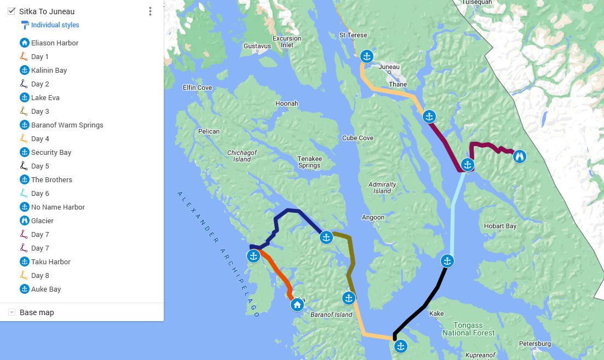

Eight days through one of the least-visited coastlines in North America. Starting and ending in Juneau, with everything in between determined by the weather, the wildlife, and what you want to do.
This is the framework. Exact routing adapts to weather windows, wildlife sightings, fishing activity, and what guests want to prioritize. No two charters run exactly the same.
Board Motor Yacht Oceana in Juneau. After vessel orientation, Oceana heads south through Chatham Strait, one of the most active whale corridors in Southeast Alaska. Humpback and orca sightings are common on the transit. Anchor at White Stone Harbor for the first night.
Morning wildlife time at Freshwater Bay, one of the most reliable brown bear viewing areas in the region. Then into Tenakee Springs: a small community accessible only by boat or floatplane. Walk the historic single-lane road through town. Before pushing out for the evening, crab pots go in the water near the old cannery site.
The pots from yesterday come up. Whatever's in them goes to the galley. The rest of the day is on the water, kayaking through one of the most sheltered anchorages on the route, with old-growth forest running to the waterline on every side.
A full day running south along Baranof Island. Fishing from the vessel, shore hikes into old-growth spruce and hemlock, and kayaking into inlets the main vessel can't reach. Wilderness access that most visitors never see.
A morning tour of a working salmon hatchery, a look at what sustains the region's fishery. Then a hike to riverside thermally heated hot springs before the afternoon anchor at Red Bluff Bay, where waterfalls drop into the anchorage from the surrounding terrain.
Crossing South Chatham Strait toward Frederick Sound. Sea otters are common along the Kuiu Island shoreline. Overnight anchor at The Brothers Islands, remote, quiet, and well off any standard cruising route.
Oceana navigates deep into the fjords toward either Dawes Glacier or Sawyer Glacier, active tidewater glaciers at the end of narrow, ice-filled channels. The scale is difficult to describe and doesn't fully translate to photographs. This is what most guests point to when asked what they'll remember longest.
A final stop at Taku Harbor, home to a reclaimed abandoned cannery and a quiet contrast to where the week began. Then the last stretch back to Juneau. The crew assists with catch processing and packing for transport home.
On routing flexibility: Exact daily stops adapt to weather, tidal windows, wildlife activity, and guest preferences. The crew briefs each morning on the plan and adjusts in real time. The goal is always to put you in the best position: for fishing, wildlife, or simply finding somewhere quiet and extraordinary to anchor for the night. Questions about what's included? Browse the FAQ.

2026 availability is limited. Tell us when you'd like to go and we'll confirm within 24 hours.
Request Your Dates